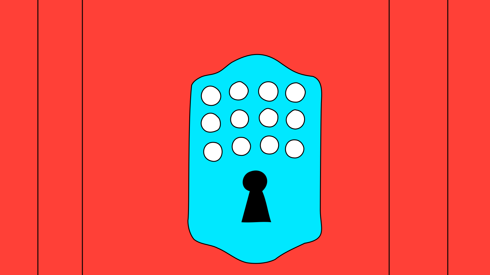

Danke fürs Spielen und entschuldige die Zumutung.
Inklusion ist ein Prozess, deshalb freue ich mich über Kritik, Hinweise, Verbesserungsvorschläge und Lob unter contact(at)maria-zimmermann.ch.
<3 M
Dank
Josef Renner, Goran Arnold, Jonathan Kakon, Sirkka Amman, Nina Mann, Norma Schudel, Micha Friemel, Mel Wertnik, Jeanne-Vera Bourguignon, Jonas Iseli, Philip Klostermann, Milo
Krohn, Daniel Wernli, Anna Zimmermann, Zo Hug, Jil Erdmann, Tobias Preisig, André Rothfuchs, Timo Crivelli, Lena Dreher
© 2026 Maria Zimmermann
ZHdK MAS Design Direction, Mentorat Josef Renner